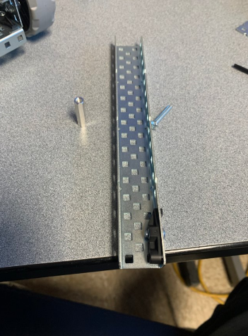
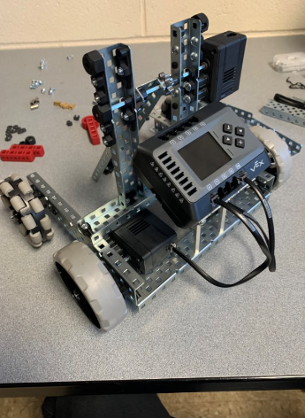
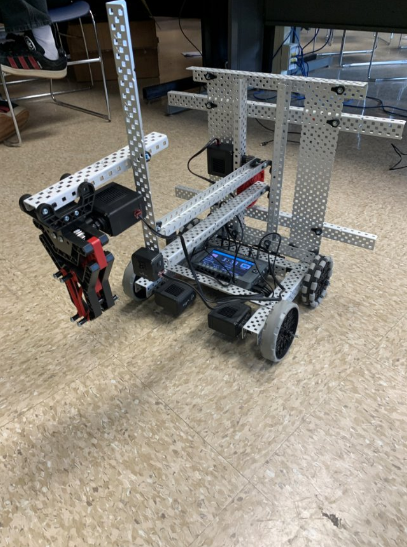

My capstone Project revolved around mobile robotics and robotic engineering. The purpose of my project was to learn how to engineer and program robots. I wanted to be able to show my technical skills and problem-solving abilities to potential employers, educators, and peers. I was one of the only two people in my shop who decided to take on the challenge of robotics. This project relates to my trade area of Information Technology by demonstrating my technical expertise and my ability to solve complex technical problems effectively. This project served as a professional tool to support my growth and showcase my readiness for real-world opportunities.
My goal for this project was to create a working mobile robot that could pick up objects. The resources I needed to complete this project were a computer with internet access, robotics components such as motors and metal plates, software for coding and testing the robot, and a camera to document the building process. After getting the basics of robotics, I decided to try to compete in SkillsUSA to further hone my engineering and programming skills. I may not have won, but it served as a good learning opportunity and helped me improve at robotics.


